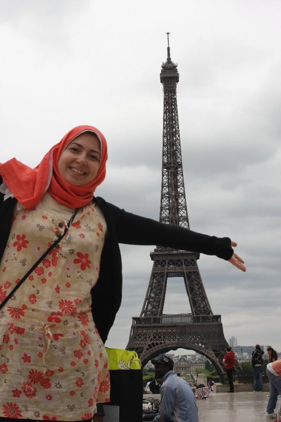

About me
Amira is currently working as a UX Designer at Innosphere, Guelph. Earlier she was the User Interface Team Lead at Itworx. She was born and grew up in Cairo, Egypt, where she got her Master degree of Computer Science at the American University in Cairo, 2011.
Generally, she tends to find great joy in visiting new cities and places around the globe. Her travel experience includes Turkey, Italy, Spain, Belgium, Austria, Czech Republic, England, Scotland, USA, Canada, Malaysia and Thailand, where she spent her unforgettable honeymoon. Traveling has taught her a lot, primarily, understanding people, their behavior and culture.
This certainly helps her in her work. Besides traveling, food and cooking are great sources of happiness to her.
Professionally, as UX designer with 10+ years of experience, she is passionate for creating exemplary user experiences that meet the exact needs of clients and making products that are a joy to use through simplicity and elegance. With her multifaceted background in computer science, enterpreneurship and ux design in addition to a deep understanding of the human interaction and user centric design process, She is relatively very experienced in keeping balance between the stakeholders’ requirements and the user’s needs in creating award winning projects and truly successful stories.
Moreover, building intuitive and creative digital interfaces that comply with the standards of the rapidly evolving UX design industry as well as impressions from users that last, satisfies her extremely in my everyday life, and helps her set new goals for herself continuously.
Also, volunteering at organizations she cares about, such as Girls Learning Code and KWIA Community.
For several years at her home country, she was a public speaker for UX topics to students and general UX practitioners who wish to learn more without getting that chance.
Last but not least, she is a serial hobbyist whom has done many things from painting and coloring to reading books, manga, watching anime, cooking, professional photography, playing guitar and squash.